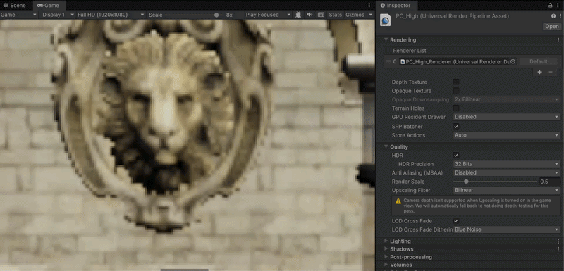
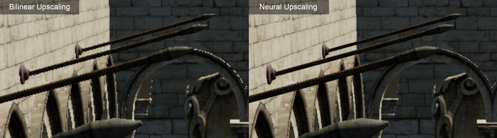
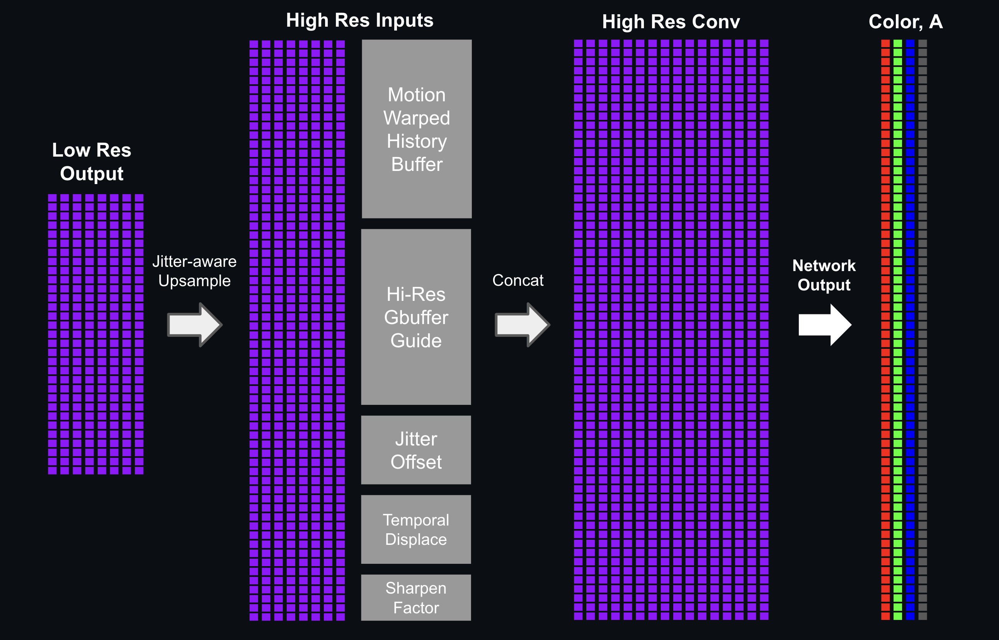

This article recaps my journey to implement a machine-learning upscaler for realtime renderers and game engines. I will share the challenges encountered along the way, and various tips and tricks to optimize the model's training and inference.
By training the model using temporal rendering data, we are able to reconstruct and accumulate sub-pixel data across frames, and generate a crisp image in higher resolution:

Sponza: 960x540 rendering upsampled to 1920x1080 /w neural upscaling (x6 zoom)
This approach uses a hybrid architecture that extracts latent features in low resolution, then performs a high-resolution reconstruction guided by a full-res G-buffer. Anchoring the network to high-res geometry and material data helps extract sharp details and ensure that textures and edges remain crisp and stable:

Antialiasing comparison: bilinear (left) and neural upscaling (right)
## Low resolution feature extraction
The network first reads the model's inputs (LR color + depth) and runs them through a 2-level (three-scale) encoder/decoder operating at low resolution:
1. The initial encoder layer applies a 3×3 convolution to produce 8 hidden features, then a 2×2 average-pool halves the resolution.
2. The second encoder layer (3×3) produces 8 hidden features, then applies another 2×2 average-pool, reducing the resolution to a quarter of the input.
3. The bottleneck convolution layer produces 8 hidden features at the coarsest scale (quarter resolution).
4. The network then upsamples the hidden features back to input resolution. Each upsampling step adds a residual skip connection from the matching encoder level, preserving high-frequency edge detail before a decoder convolution.
Feature extraction
All convolutions use a 3×3 kernel with a ReLU activation. The pooling pyramid gives the network multi-scale spatial context while keeping cost low: the deeper convolutions run at half and quarter resolution, so only the two outermost convolutions touch full (LR) resolution. The output of this pass is a low-resolution feature map (width × height × 8) that captures the relevant characteristics of the input image at multiple scales.
## High-resolution frame reconstruction
The next pass reads the 8 low-res features and upsamples them to screen resolution with a jitter-aware ×2 upsample. We negate the sub-pixel jitter offset from our pixel coordinate to minimize flickering and stabilize our reconstruction.
In addition to the 8 latent features, we also concatenate 12 addition inputs to the high-resolution 3×3 convolution layer:
- Motion-warped color history
- Motion-warped texel offset
- Temporal luma delta
- Current frame's jitter offset
- High resolution G-buffer
Similarly to other temporal upscalers, we retrieve the last frame's motion-warped color by sampling the history buffer with a motion vector offset. Subtracting the motion vector offset from the screen coordinates will negate camera motion, and ensure we are sampling the history buffer at the previous frame's coordinates.
```
// Reproject: sample last frame's color. Subtracting the motion vector negates camera/object motion
float2 prevUV = uv - motionVector;
float3 warpedHistory = SampleHistory(historyBuffer, prevUV); // tonemapped-YCoCg
```
While sampling the history buffer, we also calculate the normalize distance of the warped coordinates relative to the texel center. This "motion-warped texel offset" will be used by the network for stabilization and sharpening.
```
// How far the reprojected fetch lands from a texel center (sub-texel offset).
// Larger offset = history is smeared by bilinear sampling
float2 texel = prevUV * historySize; // history-texel space
float2 d = texel - (floor(texel) + 0.5); // vector to nearest center
float texelOffset = saturate(length(d) / 0.7071); // normalize (max = sqrt(0.5))
```
We also calcualte the "temporal luma delta", which is the difference in luminance between the current frame's (input) color and the motion-warped history buffer.
```
// Temporal luma delta:
float lumaDelta = inputColor.x - warpedHistory.x;
```
The layer outputs 4 channels: Y, Co, Cg and A. The first 3 channels represent our pixel's luminance and chrominance (more details on this in the "Color Space" section). 'A' represents the temporal accumulation blend factor of our model.

Frame reconstruction
**Note:** this model modifies the deferred pipeline to render a full resolution target for the geometry (G-buffer) pass. All other render passes including the deferred lighting pass are kept at half resolution. The high resolution G-buffer is used as a guide to help our network reconstruct fine details and better preserve the underyling geometry.
## Temporal accumulation and sharpening
The final step will accumulate the model's reconstruction on top of previous frames. Blending a percentage of the reconstruction and warped history buffer, using the network's machine-learned blend factor 'a'. This allows our network to gradually refine the image across multiple frames, building up sub-pixel data at different jitter offsets.
```
float3 Accumulate(float3 R, float3 H, float a, bool hasHistory)
{
// Learned blend weight α
// No history (first frame / disocclusion) α = 0, output is pure reconstruction.
float alpha = hasHistory ? alphaMax * sigmoid(a) : 0.0;
// out = α·history + (1−α)·reconstruction
float3 outY;
outY.x = alpha * H.x + (1.0 - alpha) * R.x; // luminance Y
outY.y = alpha * H.y + (1.0 - alpha) * R.y; // chrominance Co
outY.z = alpha * H.z + (1.0 - alpha) * R.z; // chrominance Cg
return outY; // Blended output (also next frame's history)
}
```
We apply edge sharpening by adding the reconstruction-to-history luma delta ontop of the temporal accumulation. The sharpening amount is driven by the sub-texel offset described in the previous section and is amplified by a tuneable 'sharpenIntensity' uniform. Note that the sharpening is also gated by configurable 'GATE_LO'/'GATE_HI' defines, so we limit sharpening to pixels with sufficiently large luma delta:
```
float dY = R.x - warpedHistory.x;
float amt = sigmoid(sharpenIntensity) * texelOffset * smoothstep(GATE_LO, GATE_HI, abs(dY));
outY.x = saturate(alpha * H.x + (1.0 - alpha) * R.x + dY * amt); // luminance + sharpen
```
Across multiple frames, our network will temporally accumulate newly reconstructed subsamples on top of history buffer, extracting detail and generating smooth and crisp edges:
Foliage upscaling (bilinear vs neural)
## Color space
Instead of teaching our network to output 3 different color channels, we can simplify the training process by transforming our input into the YCoCg color space. 'Y' encodes our pixel's luminance, while 'Co' and 'Cg' encode our pixel's orange and green chrominance. The YCoCg encoding is applied using the following matrix:
\[
\begin{bmatrix} Y \\ Co \\ Cg \end{bmatrix} =
\begin{bmatrix} 1/4 & 1/2 & 1/4 \\ 1/2 & 0 & -1/2 \\ -1/4 & 1/2 & -1/4 \end{bmatrix}
\begin{bmatrix} R \\ G \\ B \end{bmatrix}
\]
The network will perform all feature extraction and upscaling in the YCoCg color space. Once the network's prediction is ready, we simply decode and unpack the YCoCg value back to 3 separate RGB channels, using the inverse matrix:
\[
\begin{bmatrix} R \\ G \\ B \end{bmatrix} =
\begin{bmatrix} 1 & 1 & -1 \\ 1 & 0 & 1 \\ 1 & -1 & -1 \end{bmatrix}
\begin{bmatrix} Y \\ Co \\ Cg \end{bmatrix}
\]
The main reason to do this is to reduce our network's training load. When using RGB, there is a high correlation between all three channels. A higher luminance pixel must increase the values of all three color channels. To reconstruct with proper luminance, our network must learn additional correlations across all three channels.
Training with RGB will also reduce the accuracy of our gradient computations. The human eye is much more sensitive to changes in luminance compared to changes in hue/color. By using YCoCg encoding, we can manually weigh the different components of our model's output, and give higher importance to changes in luminance ('Y') over changes in chrominance ('Co', 'Cg'). This will teach our model to prioritize sharper edges and detail over minute color differences:
## Tonemapping
The upscaling network will execute prior to image post processing effects, such as tone mapping and bloom. This means our network must consume the lit color buffers in an HDR (linear) value range.
Training a network to perform feature extraction and upscaling in a large and unbounded range is less than ideal. The network will have to run through many training iterations, slowly increasing the kernel weights to high magnitude, so the network can output sufficiently high luminance values for intensely lit and emissive surfaces.
More importantly, our trainer's loss function (calculating the prediction error and loss for each training step) will produce a very high error when encountering high luminance values in our training data set. This can easily blow up our network's gradient, causing the network to overshoot and regress learning.
A much simpler solution is to run our network using a normalized [0,1] value range. To achieve this, we simply run our network's color inputs and outputs through a custom tonemapper.
We can choose the most optimal tonemapping function to best fit our content. In this example, I chose to implement a custom Reinhard-Gamma tonemapper:
The upper bound (Lmax) is calculated by iterating through the training data set and extracting the brightest pixel in the HDR color target.
Reinhard-Gamma outputs a wide value range for darks and midtones. But as the input value gets closer to the remapper's ceiling, the output's value range begins to shrink. This will reduce our network's ability to produce very high luminance values in great precision. But since the vast majority of pixels in our training dataset lay within the dark-midtone range, this is an acceptable trade off.
Once our network's prediction is ready, we need to remap our value back to linear space. This is achieved by applying an inverse of the tonemapper:
Another option would be to use a normalized Log tonemapper which provides a very wide range and precision for high luminance values. But this would regress image quality for dark and mid-range luminance, which is not acceptable in most cases. A third option for high-luminance content is using a more complex Hybrid-Log-Gamma (HLG) tonemapper. HLG uses a gamma curve for dark/mid-range values and switches to a logarithmic curve for high luminance. This maintains a better balance for both mid and high tones compared to normalized Log.
Tonemapping: how the different tonemappers remap linear luminance
## Capture rig
To build our training pipeline, we need to first implement a training simulation and extract the needed image data from our rendering engine. This process must be done carefully to ensure there are no mismatches between our trainer and rendering pipeline. Keep a close eye on factors such as texture formats, coordinate space and orientation.
We start by injecting additional "capture" passes within our existing render pipeline. These passes will copy the needed buffer data from the GPU and save the captured images to disk:
1. Low res color input
2. Low res motion vectors
3. High res color target
4. High res g-buffer guide (depth, normals, albedo)
5. Per-frame jittering offset
We render our simulation using two scenarios: a fly through of our 3D environment and a static camera. The first scenario will generate a range of motion vector magnitudes by varying the camera speed throughout the capture. The second scenario uses a static camera, and will focus our network's training on sub-pixel reconstruction using the per frame jittering offset.
Our capture rig uses two cameras with a synchronized transformation. The first camera will capture our model's inputs, rendering all passes (except the g-buffer pass!) at half res. The second camera renders the same sequence in parallel using a full res framebuffer. This pass enables MSAAx8 and Subpixel Morphological AntiAliasing to improve the image quality.
Left: high resolution camera (4K), Right: low resolution camera (1080p)
When using an HDR rendering pipeline, the color capture pass must be injected prior to the tonemapping and post processing pass. This allows us to extract the renderer's lit color using a floating point buffer format. My example implements a GPU-copy ("blit") pass, writing the data to a temporary buffer using a 16-bit per channel floating point format. The temp buffer is then serialized to disk using the tinyexr library and saved as .EXR file format.
We must use a lossless and high precision format for the color, motion vector and depth. But all other inputs can be captured using a lossy .png format to save disk space and memory during training. This can become crucial for larger datasets. In my example, a relatively small capture of 512 frames occupied around 35GB in storage.
We also record a manifest file alongside our training data. This file is loaded by the training framework to initialize training using the correct configuration. Each entry serializes a relative path to the training samples along with the frame's jitter offset:
```json
{
"scene": "Capture",
"frame_count": 512,
"hr_width": 3840,
"hr_height": 2160,
"lr_width": 1920,
"lr_height": 1080,
"downsample_factor": 2,
"color_space": "linear-hdr",
"motion_convention": "uv_current_minus_previous",
"jitter_units": "texel_lr_px",
"samples": [
{
"frame": 0,
"lr_color": "lr/000000.exr",
"hr_normal": "hr_normal/000000.png",
"hr_albedo": "hr_albedo/000000.png",
"hr_depth": "hr_depth/000000.exr",
"motion": "mv/000000.exr",
"target": "hr/000000.exr",
"jitter": [
-0.25,
-0.25
]
},
]
}
```
## Training engine
We can train our model using robust machine learning frameworks like PyTorch and TensorFlow. In my case I found it is much more intuitive to experiment, debug and iterate using a hand-written and bare-metal trainer.
By implementing the trainer ourselves, we can instrument all aspects of the training loop, extracting useful data and signals to identify issues and improve our model. And by using a native graphics API such as Metal, we can easily test and optimize our model's inference alongside our trainer. Reducing the need for constant round-trips between the inference engine and training framework. This leads to a more streamlined workflow and faster iteration.
### Data set loader
The first task of our training engine is loading our data set. Attempting to front-load any reasonably sized data set will consume too much memory. Our training engine will quickly run OOM and crash.
To circumvent this, we implement a cropping data loader. Our trainer initializes by loading a quarter-view of the input data. Every 1000 training steps or so, our trainer will reload a different region of the input data set from disk. Over time, our trainer will iterate over all of our data samples:
Training crop loader
We can use the cropped data loader to train our model using a large number of high resolution frames, while keeping memory usage to a minimum.
### Data sequencer
At each training step, the engine will iterate over our data samples and use them as network inputs as well as target reference. Iterating over a large data set will increase the training time and difficulty. Training the network using the same sequence, over and over again, will also bias our network's learning towards certain animations.
Data sequecing is used to speed up and randomize the training inputs. The initial 50% of training steps operate on a minimal training window defined by build-time constant. The active sequence will randomize each frame, providing the network with a fresh set of inputs.
Once the step threshold is passed, the sequencer will gradually increase the sequence length to cover a larger training window:
### Loss and Optimizer
- Reconsrction loss
- History loss
- Sharpness loss
- Hubert and Reinhard
- Adam optimizer
### Measurement
Instrument the training loop to track our model's behavior and convergence:
- Visualizing prediction error with heatmaps
- Tracking the loss trajectory (reconstruction and history loss)
- Quantifying image quality (prediction and sharpness MSE)
- Measure temporal accumulation (mean weights for temporal blend factor 'a')
- Analyzing feature importance